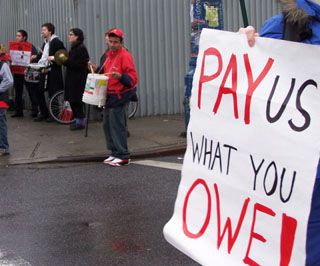

Los trabajadores de almacenes de alimentación se sindicalizan
Submitted on Tue, 01/30/2007 - 3:29pm
Por Diane Krauthamer y David Graeber; Traduccion por Anahí Malig y Lewis Krauthamer
New York es probablemente la más vibrante y dinámica economía urbana del mundo. El consumo es la base de este mercado en constante expansión y la industria de los restaurantes brilla por su notable diversidad y competencia culinaria. Pero la indiscutible aunque desconocida columna vertebral de esta industria son los trabajadores que hacen llegar los ingredientes a cada uno de sus restaurantes.
Detrás de las puertas cerradas de los comercios mayoristas de las zonas industriales de Brooklyn y Queens estos trabajadores esenciales padecen condiciones de trabajo precarias, realizando jornadas que comienzan antes del amanecer y terminan mucho después del atardecer por menos que el salario mínimo. Mientras tanto los patrones continúan desafiando los límites de la explotación aprovechándose del desconocimiento de estos trabajadores inmigrantes ilegales de las leyes laborales de los Estados Unidos de América que los amparan, a través de intentos continuos de aplastar sus esfuerzos para mejorar sus condiciones de trabajo en la tienda.
Ahora los trabajadores están afirmándose contra los patrones corruptos y las malas condiciones de trabajo contraatacando junto a La Unión de trabajadores de la alimentación de los Trabajadores Industriales del Mundo (Workers Union of the Works, IWW), I.U. 460, en una ola de propagación sindical a lo largo de estos almacenes.
Uniéndose por una vida mejor
Actualmente las empresas donde los trabajadores han comenzado esfuerzos para sindicalizarse son: Amersino Marketing Group, Sunrise Plus Corp. (antiguamente EZ-Supply Corp.), Handyfat Trading Inc., Giant Big Apple Beer Ltd. y Top City Produce.
Antes de formar un sindicato los empleados de Amersino de Queens y Brooklyn solían trabajar 65 horas semanales recibiendo entre $300 y $350 por su trabajo, en ocasiones incluso menos. Muy cerca de ahí en Sunrise Plus, los trabajadores se quejaron por las largas jornadas sin pago de horas extras, todo por menos que el salario mínimo. Los trabajadores de Top City trabajan 72 horas semanales sin horas extras ni beneficios. En Handyfat y Giant Big Apple Beer, los empleadores sometían a sus empleados a los mismos sistemáticos bajos salarios y abusos en los horarios de trabajo.
Hartos de estos maltratos los trabajadores encontraron aliados en la comunidad y en la mano de obra para ayudarlos a lanzar una campaña para hacer valer sus derechos básicos.
En junio de 2005 los empleados de Amersino presentaron una queja contra la empresa ante el departamento del Trabajo de los Estados Unidos por violación de horas y salarios. Su propietario, Yu Q "Henry" Wang, retuvo cientos de miles de dólares de estos trabajadores de almacén. En los meses que siguieron los trabajadores debieron hacer frente a abusos continuos de su patrón, el propietario Wang mientras que el departamento de trabajo postergó la demanda. Pero con la ayuda del centro comunitario de Brooklyn "Se hace camino al andar" pudieron contratar un abogado privado para presentar nuevos cargos ante la Corte Federal. El 20 de mayo de 2006 aproximadamente 20 trabajadores se unieron a IWW. Con todo el apoyo de la unión tenían por delante un camino largo y difícil.
En enero de 2006 los trabajadores de Handyfat se unieron e hicieron un acuerdo tentativo con el propietario Dennos Ho delineando condiciones sobre salario mínimo y horas extras además de un procedimiento conciliatorio.
Después de que los trabajadores de Sunrise Plus se unieran a IWW en febrero de 2006, ésta comenzó a hacer presión sobre la empresa para encontrarse en una mesa de negociación. Durante meses hicieron aumentar la tensión en la empresa con piquetes e incrementando la presencia de la unión. Sin embargo el propietario Lester Wen se negó a negociar de buena fe. En respuesta la unión estratégicamente convocó a los clientes de Sunrise Plus del área a comprar sus provisiones a través de otras empresas mayoristas.
El 18 de diciembre de 2006, miembros de IWW de Handyfat, Sunrise Plus y Starbucks junto con los Estudiantes por una Sociedad Democrática (Students for a Democratic Society, SDS) se unieron a trabajadores de Top City en un piquete para exigir que el patrón reconociera el sindicato y aceptara pagar el salario mínimo. El patrón aceptó pagar salarios atrasados y se comprometió a proseguir con las discusiones para evitar una huelga pendiente para el día siguiente.
Los empleados de Giant Big Apple Beer presentaron una queja sobre salarios y horas de trabajo al Departamento del Trabajo en 2006. Nuevamente el Departamento del trabajo no tomó medidas mientras que la empresa continuó violando las leyes estatales y federales sobre salarios. Los trabajadores consultaron al abogado laboral de la ciudad de New York Stuart Lichten, quien representó a integrantes del sindicato de trabajadores de Starbucks en el convenio de la Junta Nacional de Relaciones del Trabajo de los Estados Unidos (National Labor Relations Board, NLRB) del año pasado, y el 26 de diciembre de 2006 entablaron una demanda colectiva contra la empresa en nombre de todos los empleados, actuales y pasados.
Los patrones toman represalias
Con el incremento de la tensión en otras tiendas, el propietario de Amersino Henry Wang respondió a los intentos de sindicalización de los trabajadores con amenazas y despidos.
El 20 de marzo de 2006 los trabajadores sindicalizados confrontaron a Wang, instándolo a ceder a su pedido de reintegrar a los trabajadores despedidos y a aceptar darles salarios justos y jornadas laborales decentes. Sin embargo durante los días siguientes despidió a otros dos trabajadores y se negó a hablar con representantes de IWW. Trabajadores marcharon nuevamente en la planta el 25 de marzo a lo que Wang, dándose cuenta que sus empleados amenazaban con una huelga, amenazó con despedir a más trabajadores sindicalizados, con cerrar el almacén y hasta con sobornar empleados para votar contra la unión en las elecciones de la NLRB. Luego trajo a jefes y personal de otras instalaciones para votar en contra de IWW en las elecciones del 28 de abril y cuestionó la validez de los votos de los partidarios de la unión argumentando que estos no trabajaban en Amersino.
El día siguiente dos dirigentes sindicales fueron suspendidos. Ninguna razón fue dada. Los trabajadores marcharon afuera en solidaridad con los integrantes de la unión suspendidos, declarando que no volverían a sus puestos de trabajo mientras éstos no retornaran. Wang respondió inmediatamente trayendo rompehuelgas, cerrando al almacén y dejando afuera a todos los trabajadores de la unión. A esto siguió un piquete del día de los trabajadores (Mayday) y hacia el 2 de mayo los trabajadores volvieron a su trabajo aunque a los que habían sido despedidos no se les permitió retornar.
A fines de noviembre de 2006 en Sunrise Plus el propietario Lester Wen se reunió con los trabajadores en la mesa de negociación y aceptó un convenio tentativo con la unión que implicaba el aumento del salario a $2.45 la hora, la creación de un procedimiento conciliatorio, salario vacacional y licencia por enfermedad, la no discriminación contra los trabajadores en función de su status inmigratorio y la purga del historial de actividades sindicales de los trabajadores. Pero en diciembre de 2006 incumplió este convenio tentativo y comenzó a amenazar a los trabajadores en basado en su status inmigratorio. Estas amenazas fueron en incremento a medida que los trabajadores redoblaban sus esfuerzos por hacer reconocer sus derechos laborales. En la mañana del 28 de diciembre, la IWW presentó una queja federal contra Sunrise Plus por salarios y horas extras atrasados y por excesos en las horas, Wen despidió 13 trabajadores de la empresa sindicalizados. En solidaridad con los trabajadores despedidos, empleados dejaron sus puestos de trabajo realizando una huelga sorpresiva y solo volvieron después de que la Unión les asegurara que iban a ser tomadas acciones legales contra la empresa.
Similares liquidaciones ilegales se produjeron días después en Handyfat. El propietario, Dennis Ho, exigió a los trabajadores que presentaran su formulario verificación de elegibilidad de empleo (Forma I-9) para probar que estaban legalmente autorizados a trabajar en los Estados Unidos. Poco después la dirección despidió a nueve trabajadores en represalia por sus recientes esfuerzos de sindicalización. Aunque se dijo que era porque no entregaron la forma I-9, un trabajador que trató de presentarla fue impedido de hacerlo por la dirección. Sin embargo por ley y sin importar el status inmigratorio los trabajadores de los Estados unidos deben recibir el salario mínimo y tiene derecho a organizarse. Estas liquidaciones eran solo un paso más en un claro caso de estrategia antisindical.
"Esto es horrible, le hacemos ganar dinero y ahora nos tira a la calle como si fuéramos basura", comentó Pedro Hidalgo Campos, un trabajador sindicalizado despedido de Hadyfat.
De acuerdo con los organizadores los despidos comenzaron poco después de que las empresas contrataran a un nuevo abogado conocido por su enfoque inescrupuloso. Los organizadores dicen no saber quien es el nuevo abogado, pero este cambio puede estar al origen de ésta súbita avalancha de despidos.
La lucha continúa
A pesar de los esfuerzos de los patrones para destruir la unión los trabajadores permanecen fuertes. Más de 50 trabajadores y sus partidarios hicieron piquetes en frente de Amersino y E-Z Supply el 2 de enero de 2007, para exigir salarios y horas extras impagos a su patrón y para llamar la atención sobre una demanda civil que entablarán ante la corte federal con la ayuda del IWW. Según el IWW, fue un "recordatorio amistoso" para sus patrones de que el salario mínimo del Estado de New York aumentará a $7.15 la hora, un hecho que fue "convenientemente ignorado en el pasado" según los organizadores. Los organizadores planean más acciones para protestar contra los despidos ilegales y las acciones anti-sindicales en Handyfat, Sunrise Plus y Amersino.
A lo largo de diciembre de 2006 y enero de 2007, Sunrise Plus fue el blanco de las acciones de miembros y partidarios de IWW, quienes distribuyeron folletos a sus clientes al exterior del establecimiento y discutieron con la dirección. Hacia mediados de enero ocho restaurantes en Park Slope, Brooklyn habían aceptado comprar sus provisiones a otros distribuidores. Estas campañas de información combinadas con protestas continuas en las afueras de los almacenes hicieron presión sobre las empresas para que éstas aceptaran las demandas de los trabajadores.
El trabajador de Amersino Diego Lezama declaró que el apoyo y la solidaridad surgieron una vez que el sindicato tuvo una presencia significativa en la tienda. Recientemente le dijo al dirigente de IWW Billy Randal que después de que su jefe le dijera "Trajiste esta unión de m---- aquí y vas a pagar por eso", los trabajadores respondieron marchando en masa, forzando a Wen a disculparse por su comentario- la primera vez que se disculpó por algo.
"No vamos a soportar esto más. Tiene que tratarnos como seres humanos, no como esclavos", dijo Lezama.